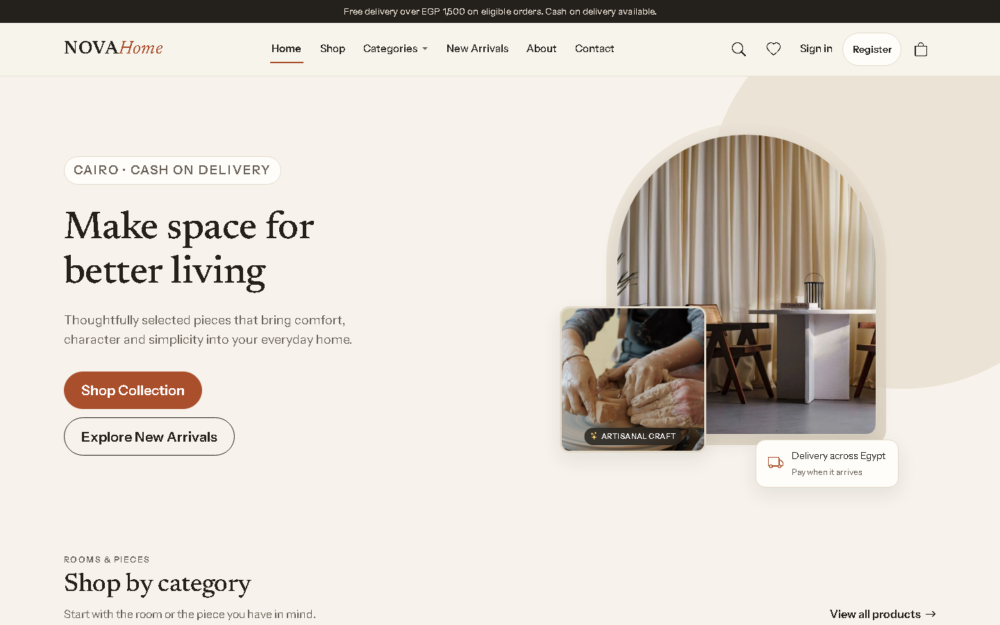
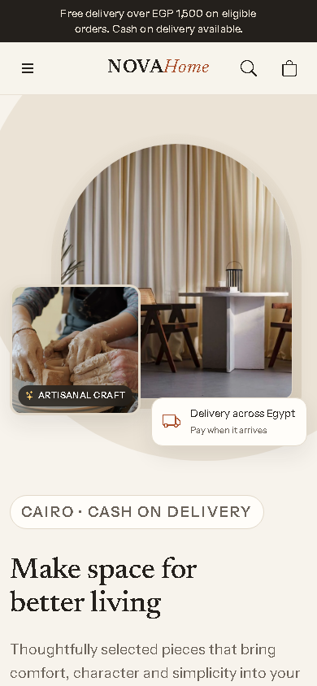
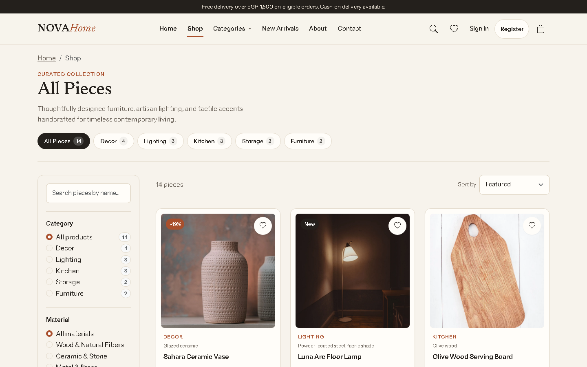
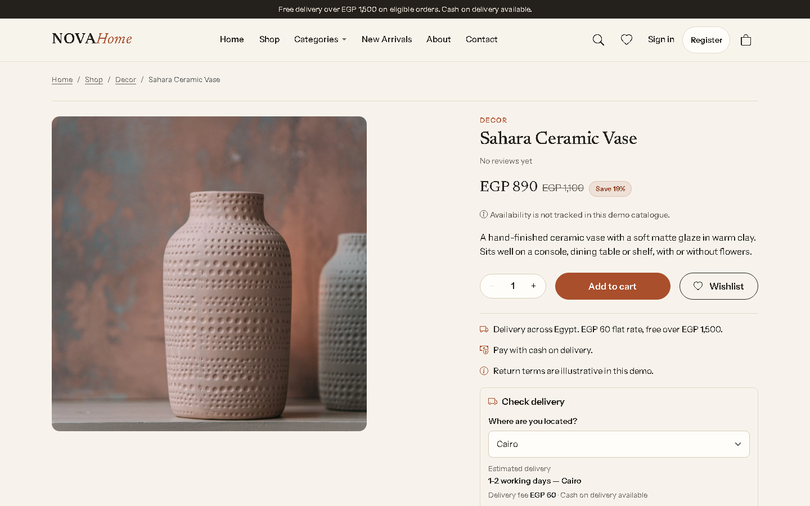
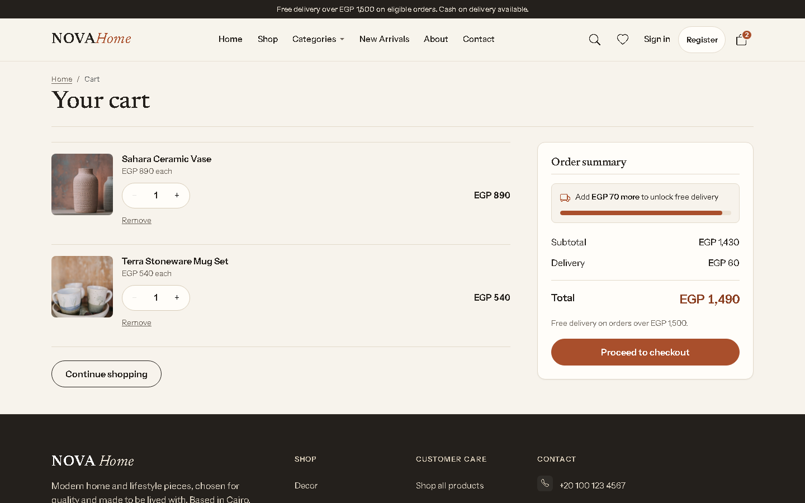
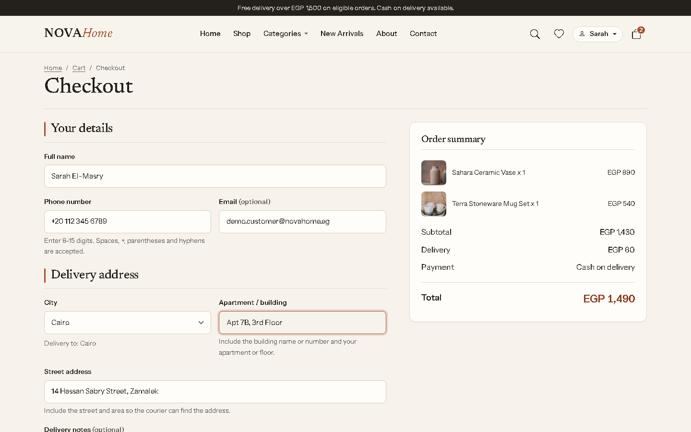
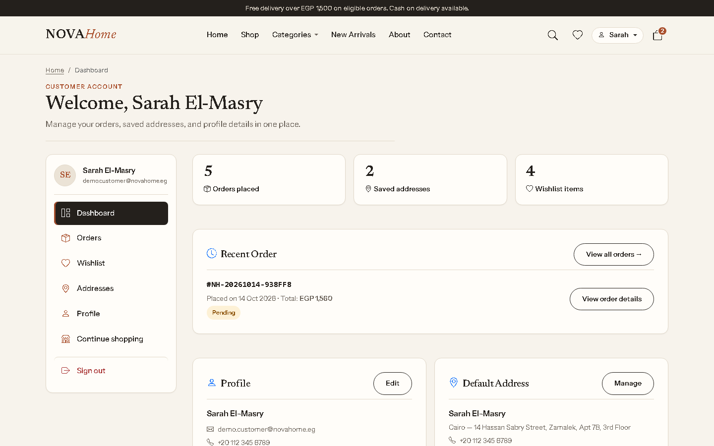
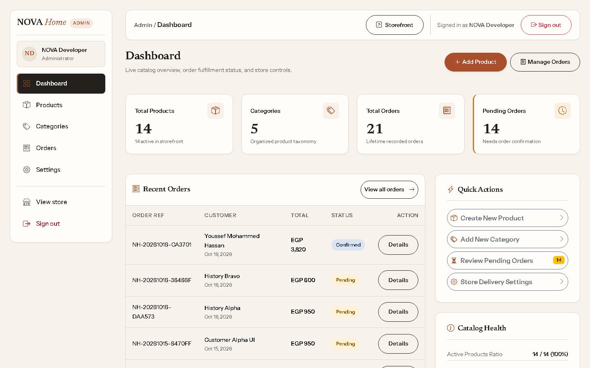

Discover the catalogue
Search, category navigation, filtering, sorting, and consistent result matching help customers move from a broad product idea to relevant items.
Project case study · 04
Full-stack engineering / Commerce platform
A furniture and home-decor commerce experience for the Egyptian market — built from product discovery through customer accounts, Cash on Delivery checkout, administration, and production deployment.

01 / The project
NOVA Home is a full-stack furniture and home-decor storefront designed around an Egyptian-market catalogue and Cash on Delivery fulfilment. Customers can discover products and manage their orders, while administrators maintain the catalogue, process orders, and configure store settings.
The engineering challenge was to make the experience feel like one coherent product without treating the storefront, customer account, database, and administration tools as unrelated pages. Product information, cart state, delivery settings, and order handling need to stay consistent across the journey.
02 / Customer experience
The customer-facing work focuses on useful discovery, clear product information, and predictable shopping state.
Search, category navigation, filtering, sorting, and consistent result matching help customers move from a broad product idea to relevant items.
Product details combine an image gallery, specifications, pricing, and delivery information. Quick View provides a faster route back to browsing.
The cart retains item quantities and recalculates displayed totals. The wishlist is deliberately browser-local and disclosed as device-specific.
Checkout is available to authenticated customers. The server re-reads current product and delivery data, validates the request, and recalculates the order before saving.
03 / Store administration
The administrator portal handles routine catalogue and order operations separately from the customer storefront.
A dashboard brings store activity, orders, and operational shortcuts into one starting point.
Administrators can create and edit products, maintain categories, manage product visibility, and update product information.
Orders can be reviewed and moved through the supported fulfilment statuses from the administration area.
Store identity and delivery settings are maintained from a dedicated settings surface.
Customer and administrator routes use separate session-backed access checks and distinct portal navigation.
Product repeaters and icon-only category actions include explicit accessible names and retain existing confirmation safeguards.
04 / Implementation
The frontend stays lightweight while server-side logic handles important commerce and access-control decisions.
Server-rendered customer and admin pages share reusable bootstrap, validation, session, and utility code. JSON endpoints serve storefront data requests.
PDO prepared statements connect PHP to MariaDB / MySQL. The server remains authoritative for product prices, delivery configuration, and order creation.
Semantic HTML, custom CSS, and Vanilla JavaScript build the storefront and interaction layer. Bootstrap supplies selected UI utilities and Swiper supports sliders.
Session-backed access control, server-side input validation, CSRF tokens, prepared SQL, password hashing, and protected application directories support account and admin workflows.
The interface covers desktop and mobile, including a responsive filter drawer, product-card hierarchy, and a mobile account-navigation grid.
GitHub Actions deploys selected runtime files to InfinityFree over explicit FTPS. The workflow includes a dry-run option and repository-level deployment gate.
05 / Refinement and QA
The final refinement pass went beyond the first implementation. I improved the mobile filter drawer, product and cart interactions, checkout guidance, customer navigation, and admin form labelling. Header autocomplete and full shop results now use consistent matching, including plural search terms such as “Lamps” and “Vases”.
Accessibility work included clearer control names, keyboard and focus behavior, reduced-motion handling, visible form feedback, responsive touch targets, and semantic status messaging. These changes were paired with focused UI regression tests instead of relying on screenshots alone.
The final project closeout recorded 847 passing checks across 14 focused test suites, covering syntax, release-readiness, storefront interactions, product details, cart and checkout, wishlist, customer messaging, search, visual consistency, responsive states, and admin accessibility.
These are project-specific automated checks, not a formal accessibility certification or a published Lighthouse / Core Web Vitals score.
06 / Interface gallery
Recent local captures from the completed NOVA interface, including desktop and mobile customer experiences and the administrator portal.







07 / Product boundaries
NOVA is an interactive project demonstration. The sample catalogue and account data are shared and mutable, so visitors should use only the provided demo flows and never enter real personal or payment information.
Those boundaries are intentional: the case study documents the implemented customer, admin, and deployment workflows rather than suggesting that a portfolio demo is a fully operated retail business.
Explore the project
The interactive demo uses synthetic shared data. Use the demo-entry options on the sign-in pages and avoid submitting real personal details.
NOVA Home is a portfolio demonstration using shared synthetic data. Cash on Delivery is the only checkout method, and the wishlist is browser-local.